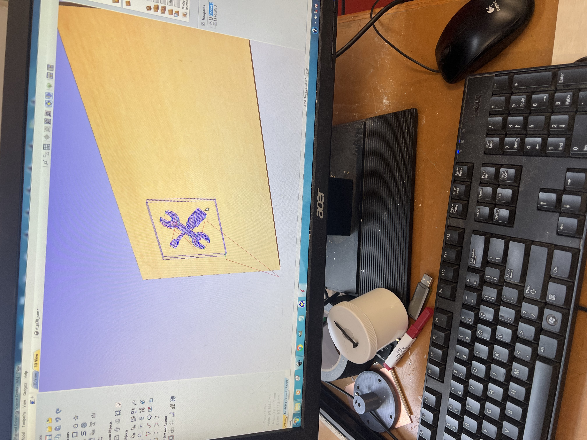
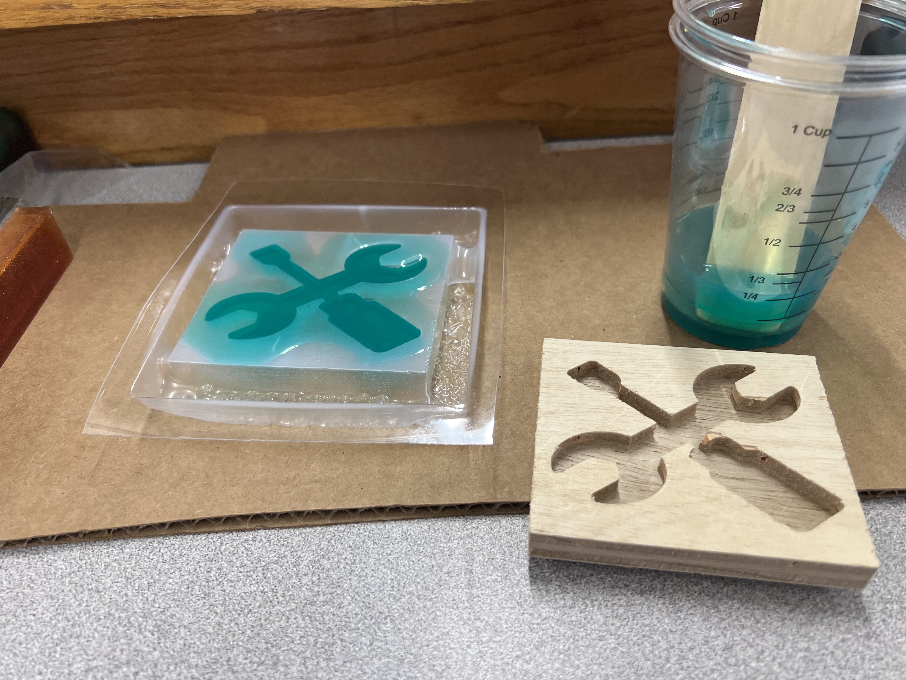

Week 8
CNC Milling, Molding & Casting
Assignment Prompt
-
Design something and make it using CNC. You may use the ShopBot (2D outlines), the Shaper (2D outlines) or the SRM-20 (2.5D molds).
-
Post-process your design using fabrication processes such as molding and casting, vacuum forming, or composites.
-
Process
-
Process
-
For the CNC design I was struggling to find an interesting shape that wasn't too complicated for my first CNC project. I then just got the idea to use the "PS70" symbol I've been using on the website. Aspire (nspire? I dunno) takes svg files directly so I used that to then cnc this image out. The image below is just of the computer before using the router. In the next section there is a clearer piece of the wood.

-
Using this piece of CNC'd wood I used the small vacuum former. I then used this as a mold to pour rubber in. I intentionally overflowed the mold to make sure it was covered and then I'll cut the excess off as it shouldn't be too much.

This worked great. Actually better than I had anticipated, though there was an error in the vacuum formed mold so the handle of the screwdriver is a little insecure.